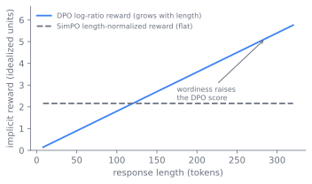

flowchart TB
subgraph rlhf["RLHF (PPO)"]
direction TB
pref1["Preference pairs"] --> rm["Reward model<br/>fit to preferences"]
rm --> ppo["PPO loop"]
pol1["Policy"] --> ppo
ref1["Frozen reference"] --> ppo
crit["Critic"] --> ppo
ppo --> aligned1["Aligned policy"]
end
subgraph dpo["DPO"]
direction TB
pref2["Preference pairs"] --> loss["Log-sigmoid loss on<br/>implicit reward gap"]
pol2["Policy"] --> loss
ref2["Frozen reference"] --> loss
loss --> aligned2["Aligned policy"]
end
rlhf -->|"implicit reward<br/>Z(x) cancels"| dpo
classDef gone fill:#f7e0e0,stroke:#b34,color:#722;
classDef keep fill:#dff0d8,stroke:#3c763d,color:#234;
class rm,ppo,crit gone;
class loss keep;
11 Direct Preference Optimization and the Variant Zoo
There is a recurring moment in an alignment pipeline. A team has a static file of preference pairs, a chosen response and a rejected one for each prompt, and it wants an aligned model out the other end. The textbook route is RLHF, and RLHF is heavy. This chapter follows the line of thought that asks whether the heaviness is necessary, watches that question collapse the whole apparatus into a single classification loss, then watches a small zoo of variants grow on top of that loss, and ends with the uncomfortable finding that, under a controlled comparison, none of the variants reliably beats the plain loss they all descend from.
11.1 A team with a pile of preferences
RLHF, covered in sec-rlhf, aligns a model in three stages: supervised fine-tuning, a reward model fit to human preferences, then a policy-gradient run with PPO (Schulman et al. 2017) that optimizes the policy against that reward under a KL leash to the reference. The machinery is heavy. PPO keeps four models in play at once, the policy, a frozen reference, the reward model, and a critic, and its result is sensitive to reward-model quality and to a handful of brittle hyperparameters. For the team with a static set of preference pairs, the question is whether all of that apparatus is necessary, or whether the preference signal can be optimized directly.
11.2 The trick: a language model is secretly a reward model
The reduction rests on one fact about the RLHF objective. Maximizing reward under a KL penalty to a reference policy,
\[ \max_{\pi_\theta}\; \mathbb{E}_{x,\,y\sim\pi_\theta}\big[r(x,y)\big] \;-\; \beta\, \mathrm{KL}\!\left(\pi_\theta(\cdot\mid x)\,\|\,\pi_\mathrm{ref}(\cdot\mid x)\right), \]
has a closed-form optimal policy: it is the reference reweighted by the exponentiated reward, \(\pi^*(y\mid x) \propto \pi_\mathrm{ref}(y\mid x)\exp(r(x,y)/\beta)\). Rafailov et al. invert this (Rafailov et al. 2023). Solving for the reward in terms of the optimal policy expresses \(r\) as a log-ratio, so the reward that any policy implies is
\[ r_\theta(x,y) \;=\; \beta\,\log\frac{\pi_\theta(y\mid x)}{\pi_\mathrm{ref}(y\mid x)} \;+\; \beta\log Z(x). \]
Substitute that implicit reward into the Bradley-Terry model of pairwise preference and the intractable partition term \(Z(x)\) cancels between the chosen response \(y_w\) and the rejected \(y_l\). What remains is a supervised loss on preference pairs,
\[ \mathcal{L}_\mathrm{DPO} = -\,\mathbb{E}_{(x,y_w,y_l)}\,\log \sigma\!\left( \beta\log\frac{\pi_\theta(y_w\mid x)}{\pi_\mathrm{ref}(y_w\mid x)} - \beta\log\frac{\pi_\theta(y_l\mid x)}{\pi_\mathrm{ref}(y_l\mid x)}\right). \]
The reward model and the RL loop are gone. The policy is trained to assign higher implicit reward to the preferred response, where implicit reward is the log-ratio of the policy to a frozen reference. The title of the paper states the point: the language model is secretly a reward model. Figure fig-dpo-variants-reduction shows the machinery that this substitution deletes.
11.3 Four edits to one loss
Once the loss exists, every later method is an edit to it. Each variant removes one assumption or one piece of machinery the previous line of the loss carried. Figure fig-dpo-variants-zoo lays out which piece each one changes.
IPO bounds the objective. Azar et al. target a weakness in the derivation (Azar et al. 2023): the Bradley-Terry substitution assumes preferences are well modeled as a deterministic ordering, and with finite, near-deterministic data the log-sigmoid loss can drive the policy to push the implicit reward gap to infinity, overfitting the preference set. IPO replaces the log-sigmoid with a bounded squared objective that regresses the implicit reward gap toward a fixed target, so the optimum stays finite even when preferences are clean. Figure fig-11-dpo-variants-1 contrasts the two loss shapes.

KTO drops the paired-data requirement. DPO needs a chosen and a rejected response for the same prompt; KTO learns from unpaired binary good or bad labels by scoring each response against a reference point with a prospect-theory utility (Ethayarajh et al. 2024), the same human-value-of-gains-and-losses shape Kahneman and Tversky used. This trades the paired-data constraint for a utility model, which matters because thumbs-up and thumbs-down logs are far more abundant than curated pairs.
ORPO folds alignment into SFT. Instead of a separate alignment stage with a reference model, Hong et al. add an odds-ratio penalty to the SFT cross-entropy (Hong et al. 2024) (the SFT stage itself is sec-sft-peft), so one pass both teaches the format and down-weights the rejected response. It carries no reference model at all.
SimPO removes the reference and normalizes by length. Meng et al. drop the reference policy from the implicit reward (Meng et al. 2024), using the average log-probability of a sequence as the reward, and add a target margin between chosen and rejected. The length normalization is the deliberate part: DPO’s log-ratio reward correlates with sequence length, which lets a policy raise its score by getting wordier, and dividing by length removes that lever. Figure fig-11-dpo-variants-2 shows the reward against response length under both rewards.

11.4 The reckoning
Read in sequence, the four edits look like a ladder of improvements, each variant fixing what the last one missed. A controlled comparison undercuts that reading.
ImportantWhat’s contested
The variant zoo is usually presented as a ladder of improvements, but a controlled multi-scale study (arXiv:2603.19335) finds no variant reliably beats vanilla DPO once confounds are corrected for. When tuning budget, data, and model are held equal, the gaps between methods shrink into the noise, and the apparent ranking inverts across model scale: a variant that leads at one size trails at another. The practical reading is that reported wins for a new objective often reflect a better-tuned baseline-versus-variant comparison rather than a property of the loss, and that the choice among these methods should be driven by pipeline and data constraints rather than by a claimed accuracy edge.
If accuracy does not separate the variants, then something else has to decide between them, and that something is the shape of the pipeline and the data.
11.5 What actually decides the choice
With the accuracy edge gone, the real axes are the engineering ones the variants trade along. Four of them recur.
- Reference model versus none. Keeping the frozen reference (DPO, IPO) anchors the policy and gives the KL leash a meaning, at the cost of a second resident model and forward pass. Dropping it (ORPO, SimPO) halves the alignment-stage memory and simplifies the pipeline, but removes the explicit anchor that limits drift from the starting policy.
- Paired versus unpaired data. DPO, IPO, ORPO, and SimPO all need a chosen and a rejected response per prompt. KTO accepts unpaired binary signals, which fits production feedback logs but substitutes a utility model for the pairwise comparison the others optimize.
- Bounded versus unbounded objective. IPO’s bounded regression resists the overfitting that DPO’s log-sigmoid invites on clean, near-deterministic preferences. The price is a loss that no longer matches Bradley-Terry exactly and a target margin to set.
- Two stages versus one. ORPO merges alignment into SFT, saving a stage and a reference model, at the cost of entangling format learning and preference learning so they can no longer be tuned or audited separately.
The first of these axes is not only a modeling choice. It is forced from below.
TipConstraint arrow
The memory budget of sec-training-at-scale reaches up and shapes the loss. DPO and IPO keep a frozen reference model resident alongside the policy and pay a second forward pass through it on every step. At large model size that doubled footprint is the cost that ORPO (no reference) and SimPO (reference-free) exist to remove. The reference-free design is not primarily an accuracy claim, it is a response to the systems cost of holding two models.
11.6 Running it
DPO is the smallest of the family to run: one loss, a frozen copy of the SFT model as the reference, and a static file of preference triples. The core is the log-ratio difference inside a log-sigmoid, computed from per-token log-probabilities of the chosen and rejected responses under the policy and the reference; see the loss derivation in DPO loss, Rafailov et al. (arXiv:2305.18290), Sec. 4 (Rafailov et al. 2023). The reference forward pass can be precomputed once because the reference never updates, which is the standard memory optimization.
The one hyperparameter that matters across the family is \(\beta\), the strength of the KL leash that also scales the implicit reward. Too small and the policy drifts off the reference and degrades; too large and it barely moves. Because vanilla DPO is off-policy, trained on a fixed set rather than on samples from the live policy, its ceiling is the fixed data, and the common remedy is iterated or online DPO that regenerates pairs from the current model between rounds. That on-policy variant, and the broader RLHF apparatus it approaches, belong to sec-rlhf.
11.7 Further reading
- Rafailov et al., “Direct Preference Optimization: Your Language Model is Secretly a Reward Model” (DPO), 2023 (NeurIPS). arXiv:2305.18290
- Azar et al., “A General Theoretical Paradigm to Understand Learning from Human Preferences” (IPO), 2023. arXiv:2310.12036
- Ethayarajh et al., “KTO: Model Alignment as Prospect Theoretic Optimization,” 2024. arXiv:2402.01306
- Hong et al., “ORPO: Monolithic Preference Optimization without Reference Model,” 2024. arXiv:2403.07691
- Meng et al., “SimPO: Simple Preference Optimization with a Reference-Free Reward,” 2024 (NeurIPS). arXiv:2405.14734
- Schulman et al., “Proximal Policy Optimization Algorithms” (PPO), 2017. arXiv:1707.06347
Azar, Mohammad Gheshlaghi, Mark Rowland, Bilal Piot, et al. 2023. “A General Theoretical Paradigm to Understand Learning from Human Preferences.” arXiv Preprint arXiv:2310.12036. https://arxiv.org/abs/2310.12036.
Ethayarajh, Kawin, Winnie Xu, Niklas Muennighoff, Dan Jurafsky, and Douwe Kiela. 2024. “KTO: Model Alignment as Prospect Theoretic Optimization.” arXiv Preprint arXiv:2402.01306. https://arxiv.org/abs/2402.01306.
Hong, Jiwoo, Noah Lee, and James Thorne. 2024. “ORPO: Monolithic Preference Optimization Without Reference Model.” arXiv Preprint arXiv:2403.07691. https://arxiv.org/abs/2403.07691.
Meng, Yu, Mengzhou Xia, and Danqi Chen. 2024. “SimPO: Simple Preference Optimization with a Reference-Free Reward.” Advances in Neural Information Processing Systems (NeurIPS). https://arxiv.org/abs/2405.14734.
Rafailov, Rafael, Archit Sharma, Eric Mitchell, Stefano Ermon, Christopher D. Manning, and Chelsea Finn. 2023. “Direct Preference Optimization: Your Language Model Is Secretly a Reward Model.” Advances in Neural Information Processing Systems (NeurIPS). https://arxiv.org/abs/2305.18290.
Schulman, John, Filip Wolski, Prafulla Dhariwal, Alec Radford, and Oleg Klimov. 2017. “Proximal Policy Optimization Algorithms.” arXiv Preprint arXiv:1707.06347. https://arxiv.org/abs/1707.06347.